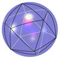
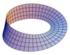
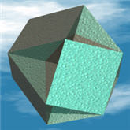
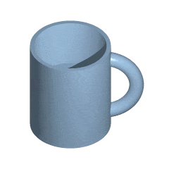

Euler's Formula
(There is another "Euler's Formula" about complex numbers,
this page is about the one used in Geometry and Graphs)
Euler's Formula
For any polyhedron that doesn't intersect itself, the
- Number of Faces
- plus the Number of Vertices (corner points)
- minus the Number of Edges
always equals 2
This can be written: F + V − E = 2
 |
Try it on the cube: A cube has 6 Faces, 8 Vertices, and 12 Edges, so: 6 + 8 − 12 = 2 |
Example With Platonic Solids
Let's try with the 5 Platonic Solids:
| Name | Faces | Vertices | Edges | F+V-E | |
|---|---|---|---|---|---|
| Tetrahedron |  |
4 | 4 | 6 | 2 |
| Cube | |
6 | 8 | 12 | 2 |
| Octahedron |  |
8 | 6 | 12 | 2 |
| Dodecahedron |  |
12 | 20 | 30 | 2 |
| Icosahedron |  |
20 | 12 | 30 | 2 |
(In fact Euler's Formula can be used to prove there are only 5 Platonic Solids)
|
Why always 2? 7 + 8 − 13 = 2 |
 |
|
Or try to include another vertex, 6 + 9 − 13 = 2. |
 |
| "No matter what we do, we always end up with 2" (But only for this type of Polyhedron ... read on!) |
The Sphere

All Platonic Solids (and many other solids) are like a Sphere ... we can reshape them so that they become a Sphere (move their corner points, then curve their faces a bit).
For this reason we know that F + V − E = 2 for a sphere
(Be careful, we can not simply say a sphere has 1 face, and 0 vertices and edges, for F+V−E=1)
So, the result is 2 again.
But Not Always 2 ... !
Now that you see how its works, let's discover how it doesn't work.
Let us join up two opposite corners of an icosahedron like this:
It is still an icosahedron (but no longer convex).
In fact it looks a bit like a drum where someone has stitched the top and bottom together.
There are the same number of edges and faces ... but one less vertex!
So:
F + V − E = 1
Oh No! It doesn't always add to 2.
The reason it didn't work was that this new shape is basically different ... that joined bit in the middle means that two vertices become 1.
Euler Characteristic
So, F+V−E can equal 2, or 1, and maybe other values, so the more general formula is
F + V − E = χ
Where χ is called the "Euler Characteristic".
Here are a few examples:
| Shape | χ | |
|---|---|---|
| Sphere | 2 | |
| Torus |  |
0 |
| Mobius Strip |  | 0 |

And the Euler Characteristic can also be less than zero.
This is the "Cubohemioctahedron": It has 10 Faces (it may look like more, but some of the "inside" faces are really just one face), 24 Edges and 12 Vertices, so:
F + V − E = −2
In fact the Euler Characteristic is a basic idea in Topology (the study of the Nature of Space).
Donut and Coffee Cup

(Animation courtesy
Wikipedia User:Kieff)
Lastly, this discussion would be incomplete without showing that a Donut and a Coffee Cup are really the same!
Well, they can be deformed into one another.
We say the two objects are "homeomorphic" (from Greek homoios = identical and morphe = shape)
Just like the platonic solids are homeomorphic to the sphere.
And your body is homeomorphic to a torus if you pinch your nose closed.